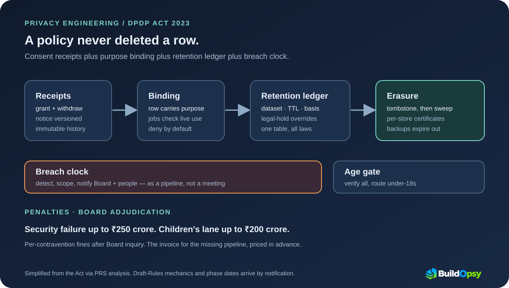

1. What the Act Actually Demands From Systems
Strip the DPDP Act to its load-bearing duties and four survive contact with engineering. First, personal data may be processed only for a lawful purpose after consent, preceded by a notice stating what is collected and why — and consent can be withdrawn at any point. Second, fiduciaries must keep data accurate, secure it, and erase it once its purpose ends unless retention is legally required. Third, every breach goes to the Data Protection Board of India and to each affected person. Fourth, processing children's data needs verifiable parental consent, with penalties up to roughly $24 million on that lane alone and roughly $30 million for failing security.
Notice what is missing: no right to portability, no right to be forgotten as Europeans know it, and broad state exemptions. The Act is narrower than GDPR and sharper than it looks — every duty it keeps maps to exactly one subsystem. Consent maps to a receipt ledger. Purpose maps to per-row binding. Storage limitation maps to an erasure pipeline. Breach notice maps to a notification queue with a clock on it. The rest of this file builds those four systems.
2. Consent Receipts: The Ledger Nobody Built
Consent under DPDP is an event with fields, not a checkbox with hope. The notice states the data and the purpose; the grant records who consented, when, to which notice version, and for what purpose; withdrawal must propagate everywhere the grant traveled. Teams that store "consented: true" on the user row discover at withdrawal time that the flag cannot answer the only questions that matter: consented to what, under which notice, and where did copies go since.
Build the receipt as immutable, append-only history: grant events and withdrawal events with timestamps, notice versions, and purpose identifiers. Serving systems check the live fold of that history before each use, the way an authorization check precedes a read. GDPR consent records work identically — accountability in both regimes means being able to replay exactly what a person agreed to and when they un-agreed. The receipt ledger is also what makes purpose binding enforceable: a downstream job may only touch data whose live purposes include its own, which turns every pipeline into a policy check rather than a trust exercise.

3. Erasure Orchestration: Delete Means Everywhere
Storage limitation sounds like a cron job until you count the copies. A single user record typically lives in the primary database, read replicas, search indexes, warehouse snapshots, feature-store rows, log archives, backups, and at least one analyst's CSV export. "Erase on purpose end" means reaching all of them with proof, because the Board — like any EU authority under Article 17 — will eventually ask how you verified, not whether you tried.
The tractable design has three layers. Tombstones propagate first: a deletion event fans out through the same change-data-capture path as writes, marking rows dead everywhere subscribers listen. Hard deletion follows per store on its own schedule, verified by a sweeper that reports per-store completion — the receipt ledger gains an erasure certificate per system, not a prayer. Backups are the honest exception: you do not rewrite last month's snapshot; you record the tombstone, suppress the data on restore, and let retention expire the bytes. Say that plainly in your procedure before a regulator asks, because "we delete from backups too" is the sentence auditors test first.
4. Breach Pipelines: A Clock, Not a Meeting
DPDP requires breach notice to the Board and to affected persons without delay. GDPR gives controllers 72 hours to reach the authority. Different clocks, identical engineering: detection must produce a scoped incident (which principals, which data, since when), the scope must render into notifications, and the notifications must actually send — all while the incident is still unfolding. Teams that run this as a meeting miss every clock; teams that run it as a pipeline meet all of them.
Price the pipeline before you need it. Notification load equals affected principals times channels, and the arrival curve is a burst the day scope is confirmed. Model it exactly like a backlog drain: burst arrivals over service capacity gives the queue, spare capacity gives the drain time. If notifying ten million principals takes longer than your fastest clock allows, the fix is pre-built templates, pre-verified channels, and send capacity held in reserve — decided this quarter, not during the incident.
5. Retention Accounting and the Age-Gate Surprise
Retention under DPDP is per-purpose arithmetic with legal-hold overrides: each purpose carries a time-to-live, each legal obligation carries an exception with its own expiry, and the ledger must show both for every dataset. The EU pattern is the same ledger with different constants. Build one table — dataset, purpose, TTL, legal basis, exception expiry — and every jurisdiction becomes a configuration row rather than a rebuild.
Then comes the clause that quietly redesigns onboarding. Verifiable parental consent for under-18 users means a fiduciary must determine whether every new signup is a child before processing anything — age-gating the entire funnel to protect the subset. The US COPPA rule (under 13) and GDPR's member-state range (13 to 16) create the same shape at different thresholds, so the engineering answer generalizes: verify age once at the gate, bind the result to the identity, and route under-threshold users into the consent flow their jurisdiction requires. Anonymity for adults survives only if the gate can tell adults apart without identifying them — the hard problem hiding inside an innocent sentence.
6. What to Steal
First, ship the consent receipt ledger before the next feature. Immutable grant and withdrawal events with notice versions and purpose identifiers, checked live at every use. No receipt, no processing.
Second, tag every row with its purposes and bind every job to one. Purpose checks at pipeline boundaries turn compliance from quarterly evidence-gathering into a runtime property.
Third, run erasure as a drill, not a promise. Quarterly, pick a test identity, invoke every deletion path, and demand per-store certificates. The drill that never runs is the finding that ships.
Fourth, pre-build the breach pipeline with templates, channels, and send capacity. Drill the clock the way you drill failover: detection to first notification, measured, with the date written down.
Fifth, keep one retention ledger for all jurisdictions. Dataset, purpose, TTL, legal basis, exception expiry — then each new law is a row of constants, not a new system. Pair the pipeline thinking with the data pipelines course: change-data-capture is the same transport whether it carries features or tombstones.
7. The Postmortem Verdict
The DPDP Act's sharpest property is what it leaves out: no portability, no right to be forgotten, wide state exemptions. What remains is a short list of duties that happen to be exactly the subsystems serious data teams already operate — receipts, binding, retention, erasure, notification. Teams with those systems will absorb this law and GDPR's next audit in the same quarter. Teams without them will discover, on a regulator's schedule, that a policy PDF never deleted a single row.
Enforcement phases arrive by notification, and the dates will land harder on teams starting from zero. The build order in this file is also the priority order: receipts first, then binding, then the erasure drill, then the breach clock. Each one pays off under every privacy regime you operate in — which is precisely why an India-dated law deserves an American and European engineering audience.
A policy never deleted a row. Only pipelines delete rows.
Sources and Method
Legislative duties, dates, penalties, and children's provisions follow PRS Legislative Research's analysis of the Digital Personal Data Protection Bill, 2023, with primary texts linked there. GDPR comparisons cite the regulation's own articles on erasure and breach notification; the COPPA age threshold follows the FTC rule. Draft-Rules mechanics and the enforcement timetable are not stated here beyond phased rollout by notification. Penalty dollar figures are approximate conversions of the statute's rupee amounts (₹250 crore for security failures, ₹200 crore for children's-data violations) at about ₹83 to the dollar; the rupee amounts govern. All scenario figures are labeled models, not company telemetry.